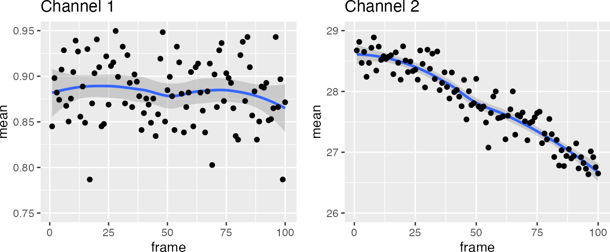
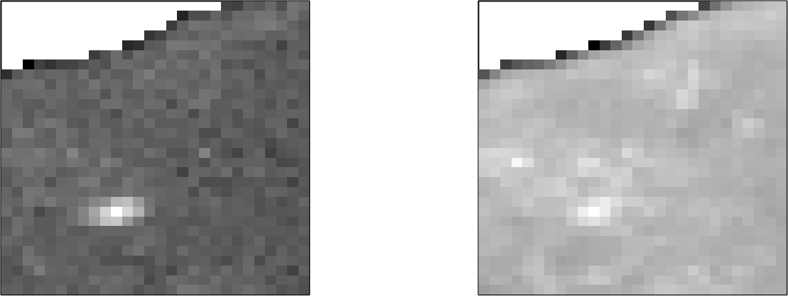

Calculating brightness with single images
Rory Nolan
2021-05-15
Source:vignettes/single-images.Rmd
single-images.RmdIn this vignette, we will look at calculating the brightness of single images interactively in an R session.
First let’s load nandb and ijtiff, which is for reading TIFF files:
pacman::p_load(nandb, ijtiff)Ordinary brightness
The package contains a sample image series which can be found atsystem.file("extdata", "two_ch.tif", package = "nandb"). It’s 2 channels each with 100 frames. Diffusing fluorescent particles are imaged. Protein A is labelled with a red dye and red photons are collected in channel 1. Protein B is labelled in green and green photons are collected in channel 2.
The image can be read into R with the read_tif() command provided by the ijtiff package. We’ll assign it to a variable called my_img.
path <- system.file("extdata", "two_ch.tif", package = "nandb")
print(path)#> [1] "/Users/runner/work/_temp/Library/nandb/extdata/two_ch.tif"
my_img <- read_tif(path)#> Reading two_ch.tif: an 8-bit, 30x28 pixel image of unsigned
#> integer type. Reading 2 channels and 100 frames . . .#> Done.my_img is now a 4-dimensional array. Slots 1 and 2 hold the y and x pixel positions, slot 3 indexes the channel and slot 4 indexes the frame.
dim(my_img)#> [1] 30 28 2 100The need for detrending
Plotting the mean intensities of the frames in the two channels, we can see that the second channel has more obvious bleaching.
#> Warning: Removed 1 rows containing non-finite values (stat_smooth).#> Warning: Removed 1 rows containing missing values (geom_point).
The presence of bleaching in this image series tells us that we should employ a detrending routine as part of our calculations. Often it’s not obvious whether or not detrending is required. nandb includes Robin Hood detrending which won’t interfere too much with images that don’t need detrending, whilst effictively detrending images that do need it. Hence, it’s pretty safe to have this detrending option turned on in general, and you should only leave it off if you’re sure it’s not needed. To turn on detrending, use detrend = TRUE in the brightness() functions.
Thresholding
You can see here that this is an image of part of a cell, with the edge of the cell across the top left and hence the top left corner of the image is not cell, just background. It’s important to threshold away this background part: the detrending routine assumes that all parts of the image are part of the region of interest (the cell) and later, when you calculate summary statistics like mean/median brightness, you also want to background regions to be excluded. Hence, you need to set the background parts to NA before detrending and brightness calculations. nandb has all of the thresholding functionality of the ImageJ Auto Threshold plugin. You can read more about this at https://imagej.net/Auto_Threshold. My favourite method is Huang. Let’s look at both of these channels with Huang thresholding.
#> Using basic display functionality.
#> * For better display functionality, install the EBImage package.
#> * To install `EBImage`:
#> - Install `BiocManager` with `install.packages("BiocManager")`.
#> - Then run `BiocManager::install("EBImage")`.
#> Using basic display functionality.
#> * For better display functionality, install the EBImage package.
#> * To install `EBImage`:
#> - Install `BiocManager` with `install.packages("BiocManager")`.
#> - Then run `BiocManager::install("EBImage")`.
That seems to have worked: the background region in the top left is now greyed out, indicating that it has been set to NA. Huang thresholding can be slow, so if you want something similar but faster, try Triangle. Always check that your thresholding looks right afterwards.
Note that if all of the image is of interest, detrending is not necessary and should not be done.
Calculation including thresholding and detrending
To calculate the brightness of this image with Huang thresholding and Robin Hood detrending, with the epsilon definition of brightness, run
my_brightness_img <- brightness(my_img, def = "e",
thresh = "Huang", detrend = TRUE)Timeseries calculation
To calculate a brightness timeseries with 50 frames per set, run
my_brightness_ts_img <- brightness_timeseries(my_img, def = "e",
frames_per_set = 50,
thresh = "Huang", detrend = TRUE)To calculate an overlapped brightness timeseries with 50 frames per set, run
my_brightness_ts_img_overlapped <- brightness_timeseries(my_img, def = "e",
frames_per_set = 50,
overlap = TRUE,
thresh = "Huang",
detrend = TRUE)Saving Images
We can save the brightness images with write_tif():
write_tif(my_brightness_img, "desired/path/of/my-brightness-img")
write_tif(my_brightness_ts_img, "desired/path/of/my-brightness-ts-img")
write_tif(my_brightness_ts_img_overlapped,
"desired/path/of/my-brightness-ts-img-overlapped")Studying the Distribution of Brightnesses
We can take a look at the distribution of brightnesses in channel 1 of the brightness image:
db <- density(my_brightness_img[, , 1, ], na.rm = TRUE)[c("x", "y")] %>%
as_tibble()
ggplot(db, aes(x, y)) + geom_line() +
labs(x = "brightness", y = "frequency") +
xlim(-2, 2) + ggtitle("Channel 1 brightness distribution")
We can compare that to the distribution of brightnesses from immobile particles:
immobile_brightnesses <- matrix(rpois(50 * 10^6, 50), nrow = 10^6) %>%
{matrixStats::rowVars(.) / rowMeans(.) - 1}
di <- density(immobile_brightnesses) %>% {data.frame(x = .$x, y = .$y)}
rbind(mutate(db, mobility = "mobile"), mutate(di, mobility = "immobile")) %>%
mutate(mobility = factor(mobility)) %>%
ggplot(aes(x, y)) + geom_line(aes(colour = mobility)) +
labs(x = "brightness", y = "frequency") +
xlim(-2, 2) +
ggtitle("Channel 1 brightness distribution compared to immobile entities")
Note that to create plots like these, you’ll need knowledge of the ggplot2 package.